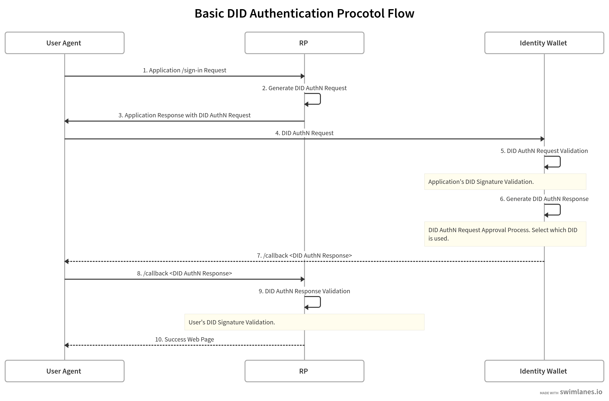

did-auth
DID AuthN
For the wallet to communicate with relying parties (RP) on secure authenticated channel, UNiD wallet SDKs provide methods of:
- validating DID AuthN request from a RP
- generating DID AuthN response to a RP
The below diagram illustrate the sign-in flow and steps taken to verify a user through their user agent from the wallet side of the webpage to the server side of a RP. If you want to see more details of DID AuthN, please head over here.

Validate AuthN Request
In step 5 of the diagram, the wallet receives an authN request from the RP. The wallet queries for the RP's DID document using a Universal Resolver and verifies the signature with the RP's public key.
UNiD.validateAuthenticationRequest()
import { UNiD } from "@unid/react-native-sdk";
(async () => {
try {
// DID AuthN Request with applicationDid
const result = await UNiD.validateAuthenticationRequest(applicationDid);
console.log("Complete validating DID AuthN Request", result);
} catch err(err){
console.err(err);
};
})()
Generate DID AuthN Response
In step 6 of the diagram, the wallet creates a DID AuthN response signed by the selected DID. The response object can envelop a verifiable presentation and will be put into a JWS signed by the DID.
DID.generateAuthenticationResponse()
import { UNiD } from "@unid/react-native-sdk";
(async () => {
try {
const DID = await UNiD.loadDid({
did: "did:unid:test:EiCsnBO7XrB9hL96xvQ2R846j_Ebuyg3HO5o4BOSoU7ffg"
});
const result = await DID.generateAuthenticationResponse({
requestedPresentation: presentation
});
console.log("Complete generating DID AuthN Response", result);
} catch err(err){
console.err(err);
};
})()